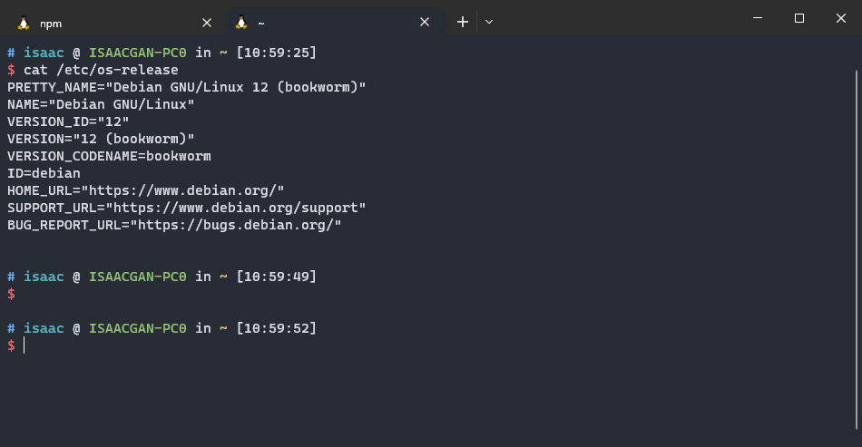
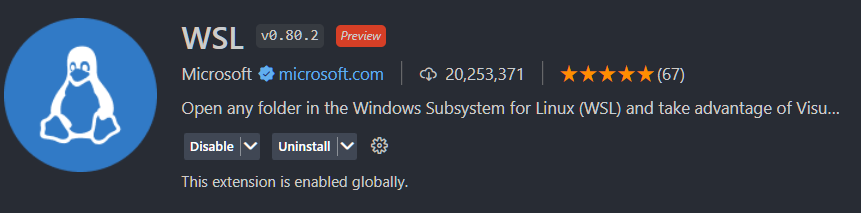
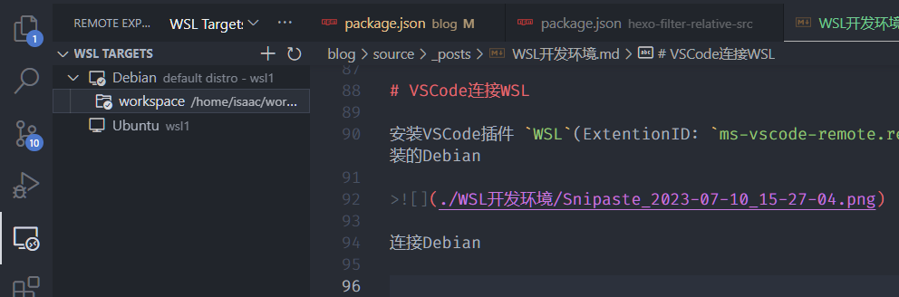
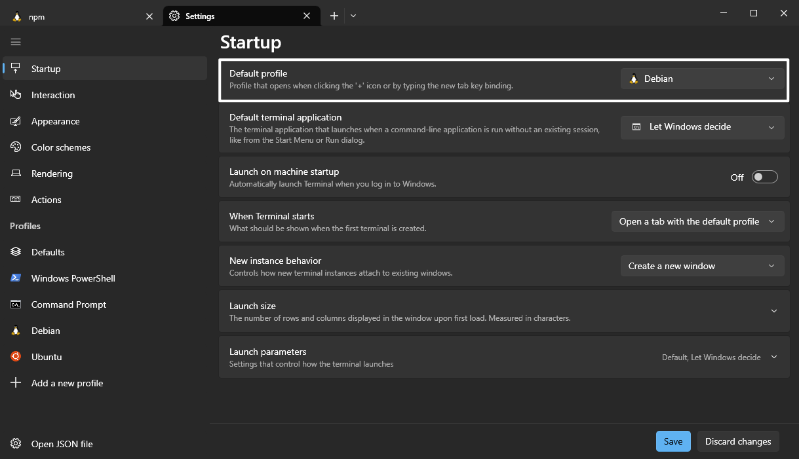
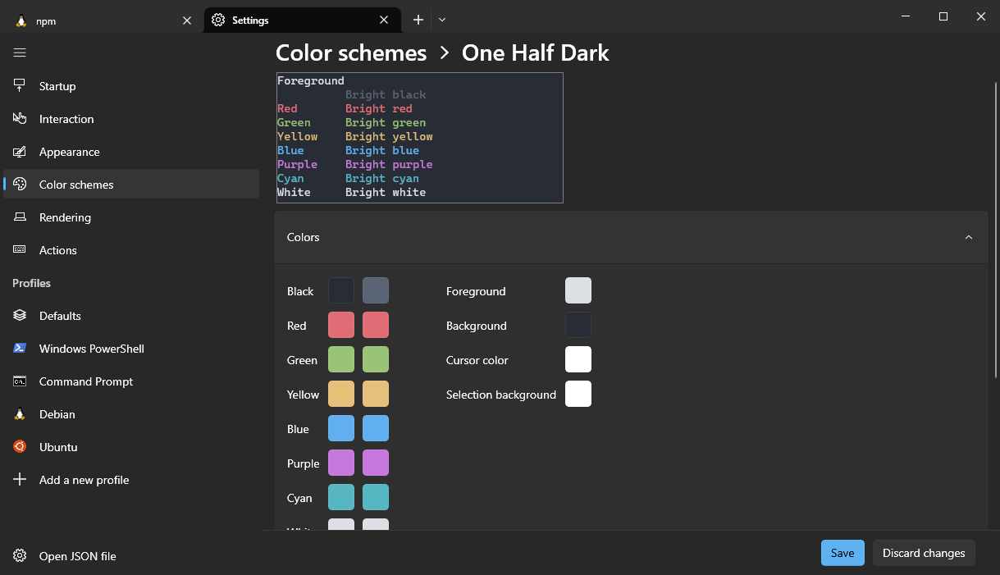
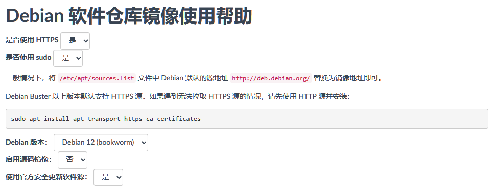
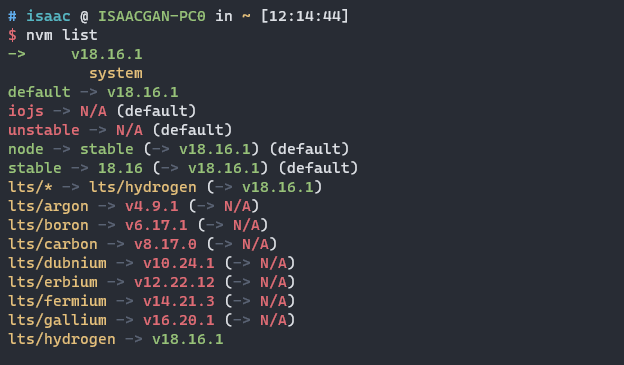

WSL搭建丝滑的开发环境
前言
本手册基于已经安装WSL2的前提编写，因此需要将windows系统升级到对应的版本，并已经安装WSL2。若未安装可参考 初识WSL2。
环境初始化分为三块：编辑器、终端 和 Linux系统。编辑器将使用VSCode；终端使用windows Terminal；Linux使用Debian。
💬 为什么是 VSCode？
VSCode (Visual Studio Code) 是一款由微软推出的免费、开源的现代化代码编辑器，它具有许多优点，其中一个显著的优点是其对 WSL (Windows Subsystem for Linux) 的支持。
使用 VSCode 连接 WSL的好处包含不限于：
跨平台使用，VSCode 支持 Windows、Linux 和 macOS 三种主流操作系统，与 WSL 的结合可以让开发人员在 Windows 操作系统中使用 Linux 环境下的开发工具，无需切换到 Linux 操作系统
编辑 Linux 文件系统，通过在 VSCode 中使用 WSL，开发人员可以轻松地编辑 Linux 文件系统中的文件，无需在 Windows 和 Linux 操作系统之间切换
与 WSL 集成的终端，VSCode 提供了一个终端，可以与 WSL 集成。这个终端可以让开发人员在一个窗口中同时运行 Windows 和 WSL 命令，并且可以轻松地切换到不同的 WSL 发行版
支持调试 WSL 中的应用程序，通过在 VSCode 中配置 WSL，开发人员可以使用 VSCode 的调试器来调试运行在 WSL 中的应用程序，这使得调试变得更加便捷和高效。
对 Docker 的支持，WSL 支持在 Linux 应用程序中运行 Docker。通过在 VSCode 中使用 WSL，开发人员可以轻松地开发和调试 Docker 容器。
💬 为什么是 Windows Terminal？
选择的基本原则首先是可以访问WSL无中文编码问题其次是不难看、不需要太多初始化。
windows下好用终端不多，可供选择的个人认为有下面几款：
| 终端模拟器 | 描述 | 主要特点 | Star 数量 |
|---|---|---|---|
| Windows Terminal ↗ | 微软官方开发，现代化终端模拟器 | 多标签页、多窗口、自定义主题 | 13.1k |
| ConEmu ↗ | 免费、开源，多功能终端模拟器 | 多标签页、自定义主题、自动滚动 | 8.1k |
| Hyper ↗ | 基于Electron，支持插件扩展 | 多标签页、自定义主题、快捷键 | 33.7k |
| Terminus ↗ | 跨平台，支持插件扩展 | 多标签页、多窗口、自定义主题 | 7.4k |
| MobaXterm ↗ | 支持多种协议，具有多项功能 | SSH、Telnet、RDP、文件传输、X11转发、远程桌面 | N/A |
相比之下，Windows Terminal 天然支持 WSL，不难看，而且无 Cmder 等的中文编码问题。
当然，有更好的选择也可以择优而用。
💬 为什么是 Debian？
WSL2可供选择linux发行不多，商用推荐使用CentOS但是，WSL2没有，退而求其次选Debian。
这个无太多且别，按个人喜好选择。
📢 本手册说明流程如下：
📌 流程种会着重描述对Debian的初始化，初始化的策略是先做必要的，再做可选的。
必要的初始化：
可选的初始化：
安装 Debian
在 PowerShell 使用 wsl --list -o 可查看当前支持安装的 linux 发行版本，使用 --install 可安装你需要的 linux 发行版本，更多的 WSL 可选项可以通过 --help 查看 或 阅读 Advanced settings configuration in WSL。
1 | wsl --install --distribution Debian |
接着是耐心的等待。
安装完成之后，需要初始化账号和密码，然后即可在 Windows Terminal添加Debian。

VSCode连接WSL
安装VSCode插件 WSL(ExtentionID: ms-vscode-remote.remote-wsl)，它让我们可以便捷地远程访问WSL安装的Debian

连接Debian

Windows Terminal连接Debian
📢 Windows Terminal可以直接在 MicroSoft Store 安装。
将 Debian 设为默认：

修改配置方案：

替换 apt 软件源
Debian 12 默认使用的软件管理工具是 apt。为了更快的软件安装速度，首先要做的是把 apt 的软件源从官方源替换为国内源
软件源保存在 /etc/apt/source.list，通过编辑此文件内容修改源。
💡 Debian 12 默认支持 vi，因此可使用 vi 编辑。可使用 dpkg -l 查看当前安装的系统软件
国内源
国内有好几个软件源，包含但不限于：
下面会使用 清华源镜像, 它有个 help页面 可方便快速生成 Debian 的 apt 源内容。

修改 source.list
备份旧源
1 | sudo mv /etc/apt/source.list /etc/apt/source.list.backup |
使用新源
1 | sudo vi /etc/apt/source.list |
替换内容为：
1 | 默认注释了源码镜像以提高 apt update 速度，如有需要可自行取消注释 |
更新源
1 | sudo apt update |
接着是耐心的等待。
📢 Debian Buster 以上版本默认支持 HTTPS 源。如果遇到无法拉取 HTTPS 源的情况，请先使用 HTTP 源并安装：
1 | sudo apt install apt-transport-https ca-certificates |
设置代理
📢 此为可选操作，若无科学上网方法可跳过
由于某些原因访问github资源速度会较慢，假如有梯子的话，可设置代理让访问速度更顺畅！
设置代理的方式是通过添加 http_proxy 和 https_proxy 两个环境变量。添加方式有几个，下面仅通过profile 方式添加。
1 | 编辑profile |
初始化 NodeJS 环境
接下来不会直接使用apt安装nodejs，而是使用 nodejs 的版本管理工具，以便后续按需在不同的node版本间切换。
常用的NodeJS版本管理工具有：
| 工具名称 | 描述 | 主要特点 | Star 数量 |
|---|---|---|---|
| nvm (Node Version Manager) ↗ | 最受欢迎的版本管理工具之一，可安装和管理多个Node.js版本 | 可以轻松切换不同版本的Node.js，兼容macOS、Linux和Windows | 68.4k |
| n (Node.js Version Management) ↗ | 另一种流行的版本管理工具，可以快速安装和切换Node.js版本 | 命令简单易用，支持在终端中直接安装和升级Node.js | 17.8k |
| nvs (Node Version Switcher) ↗ | 具有自动切换Node.js版本的版本管理工具 | 支持Windows、macOS和Linux，可以自动在不同的项目中使用不同版本的Node.js | 2.4k |
| fnm (Fast Node Manager) ↗ | 快速、简单的Node.js版本管理工具 | 支持在不同的项目中使用不同版本的Node.js，可与 Fish Shell 和 PowerShell 集成 | 12.4k |
安装 nvm
1 | curl -o- https://raw.githubusercontent.com/nvm-sh/nvm/v0.39.3/install.sh | bash |
nvm 常用命令
1 | 查看本地node版本 |

基础软件
git：分布式版本控制系统，用于管理和跟踪计算机文件的更改
curl：用于在命令行中进行数据传输的工具，它可以通过各种协议（包括HTTP、HTTPS、FTP、SMTP等）获取或发送数据
wget：用于从命令行中下载文件的工具。它可以通过HTTP、HTTPS、FTP等协议下载文件，并支持断点续传和递归下载
vim：文本编辑器，它是Unix和Linux系统中最常用的编辑器之一。它是vi编辑器的改进版本，因此它的名字也有时解释为”Vi IMproved”
lsof：用于列出打开文件的工具，它可以显示当前系统中所有正在使用的文件和进程
1 | sudo apt install git curl wget vim lsof -y |
修改Git默认编辑器
Git默认编辑器是 nano，使用体验对于来说一言难尽，习惯使用 vim。
1 | git config --global core.editor vim |
生成SSH公钥
生成SSH公钥以便从Github等代码托管平台clone代码。
生成：
1 | ssh-keygen -t rsa -C "your_email@example.com" |
获取：
生成时会输出SSH key的输出文件，公钥默认在 ~/.ssh/id_rsa.pub
1 | cat ~/.ssh/id_rsa.pub |
替换默认Shell
📢 Debian 默认 shell 是 bash。相比于bash，zsh有更好的自动补全、更强大的模式匹配、更好的可定制性、更好的历史记录和更好的作业控制。
下面将安装 zsh、设为默认的 shell和添加主题。
⚠️ 改用 zsh 后，需要将 设置代理 中的的环境变量迁移到 ~/.zshrc 中
使用apt安装
1 | sudo apt install zsh -y |
设为默认shell
1 | 列出当前支持的shell |
添加主题（oh-my-zsh）
安装：
1 | sh -c "$(curl -fsSL https://raw.githubusercontent.com/ohmyzsh/ohmyzsh/master/tools/install.sh)" |
修改 theme：
1 | 编辑配置文件 |
主题预览参考：https://github.com/ohmyzsh/ohmyzsh/wiki/Themes
重载配置
1 | source ~/.zshrc |